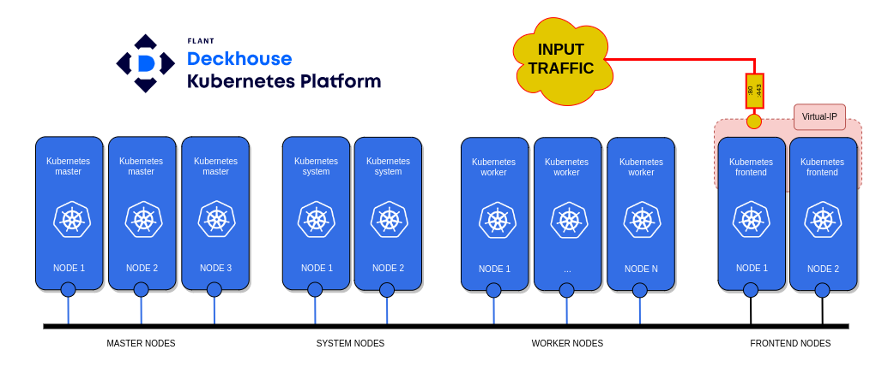

Deckhouse is a full-featured platform based on Open Source components that, in addition to Kubernetes, includes additional modules for monitoring, traffic balancing, autoscaling, secure access, and more. The modules are pre-configured, integrated with each other, and ready to use. Management of all cluster components and the platform, as well as their updates, are fully automated.
Deckhouse is certified by CNCF.
The installation consists of the following steps:
- Kubernetes cluster architecture.
- Recommended system requirements.
- Preparation of the configuration file.
- Installation of Kubernetes cluster based on Deckhouse.
- Adding frontend nodes.
- Adding system nodes.
- Adding worker nodes.
- Adding master nodes.
- Adding Local Path Provisioner.
- Adding OpenELB load balancer - VIP.
- Adding Ingress Nginx Controller - LoadBalancer.
- Adding a user for access to the cluster web interface.
- Privileges of the launched loads.
- Install Helm.
Step 1: Kubernetes cluster architecture
This article describes the implementation of an infrastructure for a high-availability Kubernetes cluster based on the Deckhouse platform.
- Structure of the Kubernetes cluster.

To deploy a minimal structure of a Kubernetes cluster based on the Deckhouse platform, you will need:
- A personal computer.
- Three nodes for the master node.
- Three nodes for the worker node.
- Two nodes for the system node.
- Two nodes for the frontend node.
In the example considered, web traffic from users arrives at the virtual IP address 192.168.1.13, hosted on frontend nodes. Choose the domain name template for accessing web services of the Deckhouse platform as %s.example.com
Deckhouse automatically configures and manages the cluster nodes and its control plane components, constantly maintaining their up-to-date configuration. When deploying master nodes, all necessary components for the control plane are automatically created using the control-plane-manager module.
Deckhouse creates and deletes Kubernetes entities as needed. For example, if your cluster has no frontend nodes and the master nodes have not had the taint restriction removed, you will not be able to install IngressNginxController. Necessary entities such as ingressClass and so on will be missing from the cluster. When adding system nodes, Deckhouse will automatically deploy monitoring components and web services for accessing the platform interface. Web services will automatically bind to %s.example.com.
- Load Deckhouse images into the local image registry.
A Kubernetes cluster using Deckhouse can be deployed in a closed environment with no internet access. To do this, download the Deckhouse platform images on a computer with internet access and upload them to the local image registry. Read more in Download Deckhouse Images.
Step 2: Recommended system requirements
- Personal computer:
- ОS: Windows 10+, macOS 10.15+, Linux (Ubuntu 18.04+, Fedora 35+).
- Installed Docker to run the Deckhouse installer.
- Access to a proxy registry or a private container image repository with Deckhouse container images.
- SSH key-based access to the node that will become the master node of the future cluster.
- Kubernetes nodes:
- Supported OS.
- Node configuration:
Name |
vCPU |
RAM (GB) |
HDD (GB) |
LAN (Gbit/s) |
Kubernetes worker |
8 |
16 |
60 |
1 |
Kubernetes system |
8 |
16 |
200 |
1 |
Kubernetes master |
4 |
8 |
60 |
1 |
Kubernetes frontend |
4 |
6 |
60 |
1 |
- Access to a proxy registry or a private container image repository with Deckhouse container images.
Начало внимание
Deckhouse only supports working with Bearer token authentication scheme in the registry.
Конец внимание
- Access to a proxy server for downloading deb/rpm packages of the OS as needed.
- The node should not have container runtime packages installed, such as containerd or Docker.
Начало примечание
Note
Installation directly from the master node is currently not supported. The Docker image installer cannot be run on the same node where the master node is planned to be deployed because there should be no container runtime packages installed on the node, such as containerd or Docker. In the absence of management nodes, install Docker on any other node of the future cluster, run the Docker image installer, install Deckhouse, and remove the Docker image installer from the node along with Docker.
Конец примечание
Step 3: Preparation of the configuration file
To install Deckhouse, prepare a YAML configuration file for the installation. To obtain the YAML configuration file, use the the Getting Started service on the Deckhouse website. The service will generate an up-to-date YAML file for the current platform version.
- Generate a YAML file using the Getting Started service by following these steps:
- Select the infrastructure - Bare Metal.
- Review the installation information.
- Specify the template for the cluster's DNS names. In our case - %s.example.com.
- Save
config.yml.
- Make the necessary changes to
config.yml. To do this, follow these steps:
- Set the Pod network space for the cluster in podSubnetCIDR.
- Set the Service network space for the cluster in serviceSubnetCIDR.
- Specify the desired Kubernetes version in kubernetesVersion.
- Check the update channel in releaseChannel (Stable).
- Check the domain name template in publicDomainTemplate (%s.example.com).
- Used to form domain names for system applications in the cluster. For example, Grafana for the template %s.example.com will be accessible as grafana.example.com.
- Check the operation mode of the cni-flannel module in podNetworkMode.
- Flannel mode, acceptable values are VXLAN (if your servers have L3 connectivity) or HostGW (for L2 networks).
- Specify the local network that cluster nodes will use in internalNetworkCIDRs.
- A list of internal network ranges, for example
'192.168.1.0/24', used by cluster nodes for communication between Kubernetes components (kube-apiserver, kubelet, etc.).
Here's an example of a primary cluster configuration file: config.yml.
For installation via the internet:
apiVersion: deckhouse.io/v1
kind: ClusterConfiguration
clusterType: Static
podSubnetCIDR: 10.111.0.0/16
serviceSubnetCIDR: 10.222.0.0/16
kubernetesVersion: "1.23"
clusterDomain: "cluster.local"
---
apiVersion: deckhouse.io/v1
kind: InitConfiguration
deckhouse:
releaseChannel: Stable
configOverrides:
global:
modules:
publicDomainTemplate: "%s.example.com"
cniFlannelEnabled: true
cniFlannel:
podNetworkMode: VXLAN
---
apiVersion: deckhouse.io/v1
kind: StaticClusterConfiguration
internalNetworkCIDRs:
- 192.168.1.0/24
For offline installation without internet access
Начало внимание To generate the YAML file using the Getting Started service, choose the Private environment infrastructure. Конец внимание Set the following parameters in the InitConfiguration resource:
echo -n "{\"auths\": { \"registry.example.com:443/images/deckhouse\": {}}}" | base64
Example of the initial cluster configuration file, apiVersion: deckhouse.io/v1 |
Step 4: Installation of Kubernetes cluster based on Deckhouse
The installation of Deckhouse Platform Community Edition involves setting up a cluster (using a Docker-image-based installer) consisting of a single master node. The Deckhouse installer is available as a container image, which requires the configuration files and SSH keys for accessing the master node. It is assumed that the SSH key used is ~/.ssh/id_rsa. The installer is based on the dhctl utility.
- Start the installer.
Начало примечание
Note
Direct installation from the master node is currently not supported. The installer, in the form of a Docker image, cannot be run on the same node where the master node deployment is planned, as container runtime packages like containerd or docker should not be installed on the node.
Конец примечание
The installer is run on a personal computer prepared in the Kubernetes cluster architecture step. On the PC, navigate to the directory with the configuration file config.yml, prepared during the configuration file preparation step.
To launch the installer via the internet:
sudo docker run --pull=always -it -v "$PWD/config.yml:/config.yml" -v "$HOME/.ssh/:/tmp/.ssh/" registry.deckhouse.io/deckhouse/ce/install:stable bash
For offline installation without internet access
sudo docker run --pull=always -it -v "$PWD/config.yml:/config.yml" -v "$HOME/.ssh/:/tmp/.ssh/" example.com:443/images/deckhouse/install:v1.46.3 bash |
- Install Deckhouse. Inside the installer container, execute the command:
dhctl bootstrap --ssh-user=<username> --ssh-host=<master_ip> --ssh-agent-private-keys=/tmp/.ssh/id_rsa \
--config=/config.yml \
--ask-become-pass
Where:
<username>. In parameter--ssh-user, specify the name of the user who generated the SSH key for installation.<master_ip>. The IP address of the master node prepared during the Kubernetes cluster architecture step.
The installation process may take 15-30 minutes with a good connection.
Step 5: Adding frontend nodes
Before adding frontend nodes, create a new custom resource NodeGroup with the name frontend. Set the parameter nodeType in the custom resource NodeGroup toStatic.
- Create file
frontend.yamlon the master node 1 with the description of the static NodeGroup namedfrontend:
apiVersion: deckhouse.io/v1
kind: NodeGroup
metadata:
name: frontend
spec:
nodeTemplate:
labels:
node-role.deckhouse.io/frontend: ""
taints:
- effect: NoExecute
key: dedicated.deckhouse.io
value: frontend
nodeType: Static
- Apply file
frontend.yamlby executing the command:
kubectl create -f frontend.yaml
- To add frontend nodes, follow these steps:
- Obtain the script code in Base64 encoding for adding and configuring a new frontend node by running the command on master node 1:
kubectl -n d8-cloud-instance-manager get secret manual-bootstrap-for-frontend -o json | jq '.data."bootstrap.sh"' -r
- Log in to the node you want to add via SSH (in this case, frontend 1) and paste the Base64-encoded string obtained in the first step:
echo <Base64-SCRIPT-CODE> | base64 -d | bash
Wait for the script to finish execution. The node has been added.
To add new frontend nodes, repeat the steps in step 3.
Step 6: Adding system nodes
Before adding system nodes, create a new custom resource NodeGroup with the name system. Set the parameter nodeType in the custom resource NodeGroup to Static.
- Create file
system.yamlon the master node 1 with the description of the static NodeGroup namedsystem:
apiVersion: deckhouse.io/v1
kind: NodeGroup
metadata:
name: system
spec:
nodeTemplate:
labels:
node-role.deckhouse.io/system: ""
taints:
- effect: NoExecute
key: dedicated.deckhouse.io
value: system
nodeType: Static
- Apply file
system.yamlby executing the command:
kubectl create -f system.yaml
- To add system nodes, follow these steps:
- Obtain the script code in Base64 encoding for adding and configuring a new system node by running the command on master node 1:
kubectl -n d8-cloud-instance-manager get secret manual-bootstrap-for-system -o json | jq '.data."bootstrap.sh"' -r
- Log in to the node you want to add via SSH (in this case, system 1) and paste the Base64-encoded string obtained in the first step:
echo <Base64-SCRIPT-CODE> | base64 -d | bash
Wait for the script to finish execution. The node has been added.
To add new system nodes, repeat the steps in step 3.
Step 7: Adding worker nodes
Before adding worker nodes, create a new custom resource NodeGroup with the name worker. Set the parameter nodeType in the custom resource NodeGroup to Static.
- Create file
worker.yamlon the master node 1 with the description of the static NodeGroup calledworker:
apiVersion: deckhouse.io/v1
kind: NodeGroup
metadata:
name: worker
spec:
nodeType: Static
kubelet:
maxPods: 200
- Apply file
worker.yamlby executing the command:
kubectl create -f worker.yaml
- To add worker nodes, follow these steps:
- Obtain the script code in Base64 encoding for adding and configuring a new worker node by running the command on master node 1:
kubectl -n d8-cloud-instance-manager get secret manual-bootstrap-for-worker -o json | jq '.data."bootstrap.sh"' -r
- Log in to the node you want to add via SSH (in this case, worker 1) and paste the Base64-encoded string obtained in the first step:
echo <Base64-CODE-SCRIPT> | base64 -d | bash
Wait for the script to finish execution. The node has been added.
To add new system nodes, repeat the steps in step 3.
Step 8: Adding master nodes
- Obtain the script code in Base64 encoding for adding and configuring a new master node by running the command on master node 1:
kubectl -n d8-cloud-instance-manager get secret manual-bootstrap-for-master -o json | jq '.data."bootstrap.sh"' -r
- Log in to the node you want to add via SSH (in this case, master 2) and paste the Base64-encoded string obtained in the first step:
echo <Base64-SCRIPT-CODE> | base64 -d | bash
Wait for the script to finish execution. The node has been added.
To add new master nodes, repeat step 8.
Step 9: Adding Local Path Provisioner
By default, there is no storageclass in Deckhouse. Create a custom resource called LocalPathProvisioner, allowing Kubernetes users to use local storage on nodes. Follow these steps:
- Create a configuration file
local-path-provisioner.yamlfor LocalPathProvisioner on the master node.
- Set the desired Reclaim policy (the default is Retain). In this article, the parameter
reclaimPolicyis set to"Delete"(PVs are deleted after PVCs are deleted).
Example of file local-path-provisioner.yaml:
apiVersion: deckhouse.io/v1alpha1
kind: LocalPathProvisioner
metadata:
name: localpath-deckhouse-system
spec:
nodeGroups:
- system
- worker
path: "/opt/local-path-provisioner"
reclaimPolicy: "Delete"
- Apply file
local-path-provisioner.yamlin Kubernetes. To that, run the following command:
kubectl apply -f local-path-provisioner.yaml
- Set the created LocalPathProvisioner as the default storageclass (default class) by running the command:
kubectl patch storageclass localpath-deckhouse-system -p '{"metadata": {"annotations":{"storageclass.kubernetes.io/is-default-class":"true"}}}'
or
sudo -i d8 k patch mc global --type merge -p “{"spec": {"settings":{"defaultClusterStorageClass":"localpath-deckhouse-system"}}}”
LocalPathProvisioner with the name localpath-deckhouse-system is created nd ready to provide local storage on nodes with the NodeGroup system and worker.
Step 10: Adding OpenELB load balancer -VIP
To ensure proper functioning of the Ingress controller, you need a direct internet connection with a white IP address on the Ingress node using NodePort. Alternatively, you can install the OpenELB load balancer, which handles traffic balancing like cloud providers. This balancer uses Speaker to support the service’s IP address.
Deploy OpenELB in VIP Mode as follows:
- Obtain the configuration file
values-openelb.yaml.
For installation via the internel:
helm repo add elma365 https://charts.elma365.tech
helm repo update
helm show values elma365/openelb > values-openelb.yaml
Get the configuration file for installation in a closed network without internet access
helm repo add elma365 https://charts.elma365.tech
tar -xf openelb-X.Y.Z.tgz |
- Modify configuration file
values-openelb.yaml.
Plan the placement of openelb-controller pods on frontend nodes by changing tolerations and nodeSelector sections:
## openelb settings
openelb:
speaker:
enable: true
vip: true
apiHosts: ":50051"
tolerations:
- key: CriticalAddonsOnly
operator: Exists
- effect: NoExecute
key: dedicated.deckhouse.io
operator: Equal
value: frontend
nodeSelector:
kubernetes.io/os: linux
node-role.deckhouse.io/frontend: ""
controller:
webhookPort: 443
tolerations:
- key: CriticalAddonsOnly
operator: Exists
- effect: NoExecute
key: dedicated.deckhouse.io
operator: Equal
value: frontend
nodeSelector:
kubernetes.io/os: linux
node-role.deckhouse.io/frontend: ""
...
## openelb settings Where |
- Install OpenELB in Kubernetes.
For installation via internet:
helm upgrade --install openelb elma365/openelb -f values-openelb.yaml -n openelb-system --create-namespace
For offline installation without internet access
helm upgrade --install openelb ./openelb -f values-openelb.yaml -n openelb-system --create-namespace |
- Configure the high availability of openelb-controller.
To ensure high availability, increase the number of openelb-controller replicas, by running the following command on master node 1:
kubectl scale --replicas=2 deployment openelb-controller -n openelb-system
Run the following command to check if openelb-controller is READY:1/1 and status is STATUS: Running. If so, OpenELB is successfully installed.
kubectl get po -n openelb-system
- Create a pool of IP addresses for OpenELB.
Create file vip-eip.yaml describing the EIP object on master node 1. The EIP object functions as a pool of IP addresses for OpenELB.
Example of file vip-eip.yaml:
apiVersion: network.kubesphere.io/v1alpha2
kind: Eip
metadata:
name: vip-eip
annotations:
eip.openelb.kubesphere.io/is-default-eip: "true"
spec:
address: 192.168.1.13
protocol: vip
interface: ens18
Apply file vip-eip.yaml in Kubernetes by running the following command:
kubectl apply -f vip-eip.yaml
- Move keepalived pods to frontend nodes.
By default, keepalived pods are placed by openelb-manager on worker nodes. Make sure that the keepalived pods are placed on frontend nodes.
Modify DaemonSet openelb-keepalive-vip by running the following command on master node 1:
kubectl patch ds -n openelb-system openelb-keepalive-vip -p '{"spec":{"template":{"spec":{"nodeSelector":{"kubernetes.io/os":"linux","node-role.deckhouse.io/frontend":""},"tolerations":[{"key":"dedicated.deckhouse.io","value":"frontend","effect":"NoExecute"}]}}}}'
Check that the changes in the DaemonSet openelb-keepalive-vip have been applied, and the pods are now on frontend nodes:
kubectl get po -o wide -n openelb-system
Step 11: Adding Ingress Nginx Controller - LoadBalancer
Deckhouse installs and manages the NGINX Ingress Controller using Custom Resources. If there is more than one node to host the Ingress Controller, it is installed in a high available mode and takes into account all features of cloud and bare metal infrastructure implementations, as well as Kubernetes clusters of various types.
- Create file
ingress-nginx-controller.ymlon master node 1 containing the configuration of the Ingress controller.
Example of the ingress-nginx-controller.yml file
|
- Apply the
ingress-nginx-controller.ymlfile in Kubernetes by executing the command:
kubectl create -f ingress-nginx-controller.yml
After installing the ingress controller, Deckhouse will automatically create the nginx-load-balancer service in the namespace d8-ingress-nginx, but it won't associate this service with OpenELB.
- Check that the changes made to the nginx-load-balancer service have been applied. An IP address, such as 192.168.1.13, should appear in EXTERNAL-IP. To do this, execute the following command:
kubectl get svc -n d8-ingress-nginx
Step 12: Adding a user for access to the cluster web interface
- Create file
user.ymlon master node 1 containing the user account description and access rights.
|
- Apply the
user.ymlfile in Kubernetes by executing the command в Kubernetes:
kubectl create -f user.yml
Step 13: Privileges of the launched loads
Allow reassigning privilege policy for the running pods:
kubectl label namespace elma365 security.deckhouse.io/pod-policy=privileged --overwrite
Step 14: Install Helm
- Go to the Helm releases page and download the
helm-vX.Y.Z-linux-amd64.tar.gzarchive of the required version.
For installation via the Internet:
wget https://get.helm.sh/helm-vX.Y.Z-linux-amd64.tar.gz
For offline installation without internet access
wget https://get.helm.sh/helm-vX.Y.Z-linux-amd64.tar.gz
|
- Unpack the archive and move the Helm binary:
tar -zxvf helm-vX.Y.Z-linux-amd64.tar.gz
mv linux-amd64/helm /usr/local/bin/helm
Found a typo? Select it and press Ctrl+Enter to send us feedback